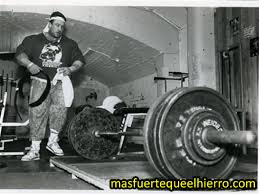
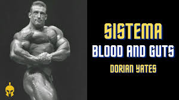
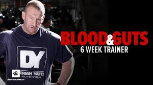
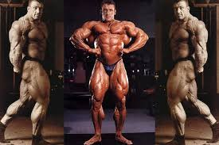
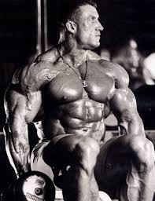

¿Qué es Blood & Guts?
Blood & Guts es un sistema de entrenamiento de alta intensidad desarrollado por Dorian Yates, seis veces ganador del Mr. Olympia. Se basa en la ejecución precisa, repeticiones forzadas y el entrenamiento al fallo absoluto.

Principios del Método Blood & Guts
- Alta intensidad: Solo una serie efectiva por ejercicio, llevada al fallo absoluto.
- Repeticiones forzadas: Uso de asistencias o repeticiones negativas para maximizar la fatiga.
- Ejecución controlada: Técnica perfecta para minimizar riesgos y maximizar la activación muscular.

Ejemplo de Rutina Blood & Guts
Una semana típica del entrenamiento Blood & Guts se estructura de la siguiente manera:
- Día 1 - Pecho y Bíceps:
- Press de banca inclinado - 1 serie al fallo
- Aperturas con mancuernas - 1 serie controlada
- Curl con barra - 1 serie al fallo
- Curl martillo - 1 serie intensa
- Día 2 - Espalda:
- Dominadas - 1 serie al fallo
- Remo con barra - 1 serie intensa
- Polea al pecho - 1 serie controlada
- Día 3 - Descanso
- Día 4 - Hombros y Tríceps:
- Press militar - 1 serie al fallo
- Elevaciones laterales - 1 serie controlada
- Fondos en paralelas - 1 serie intensa
- Día 5 - Piernas:
- Sentadilla - 1 serie al fallo
- Prensa de piernas - 1 serie intensa
- Extensiones de cuádriceps - 1 serie controlada

Evidencia y Resultados
Dorian Yates es la prueba viviente de la efectividad del Blood & Guts. Su método ha sido adoptado por numerosos culturistas que buscan maximizar la intensidad y minimizar el volumen.

Conclusión
El método Blood & Guts ha demostrado ser una filosofía de entrenamiento efectiva para quienes buscan maximizar la intensidad y el crecimiento muscular con un volumen reducido. Si bien Dorian Yates lo aplicó en el más alto nivel del culturismo, su enfoque puede ser adaptado para atletas naturales.
A diferencia de los profesionales que utilizan ayudas ergogénicas, los atletas naturales necesitan encontrar un equilibrio entre la intensidad y la recuperación. Modificar este método, aumentando ligeramente la frecuencia o ajustando la carga de trabajo, puede permitir un progreso óptimo sin comprometer la recuperación.
Blood & Guts no es solo un programa, sino una mentalidad. Exige compromiso, disciplina y la voluntad de esforzarse más allá de los límites convencionales. Sin embargo, la clave para su éxito radica en aplicarlo de manera inteligente y adaptada a las necesidades individuales.

Llegamos así al final del camino, terminó mi turno de escribir y el de ustedes de leer, es hora de pasar a la acción, es hora de ir al gimnasio...
"Mike Mentzer"